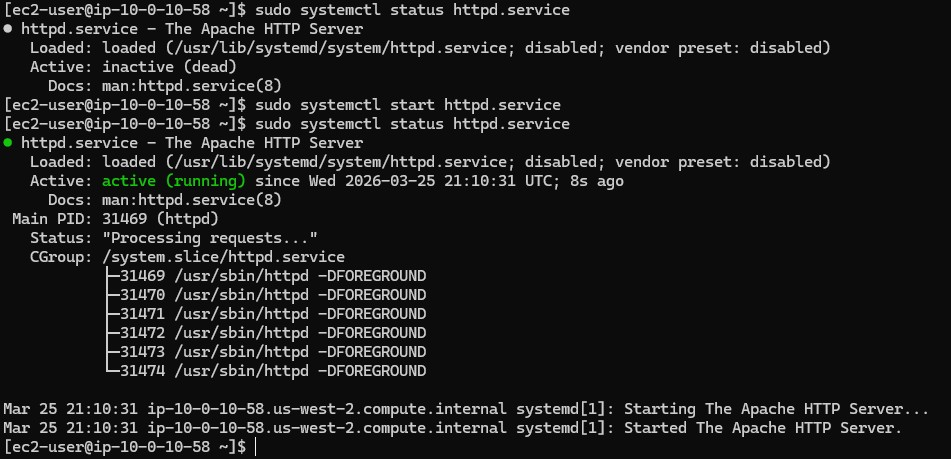

01
Verify the internal service state (OS Level)
Before assuming it's a network issue, the immediate priority was confirming if the Apache server (httpd) was actually running.
- Logged into the EC2 instance via SSH.
- Used
sudo systemctl status httpd.serviceand found the service was inactive (dead). Ana had installed the software but never started the daemon. - Started it using
sudo systemctl start httpd.serviceand validated the active (running) status.

Result: Despite starting the service, browsing to the instance's public IP still failed. The issue extended beyond just the local software daemon.